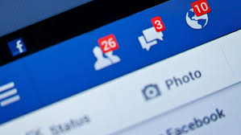

The purpose of this paper is to introduce, discuss, and analyze the topic of social networking. Specifically it will discuss the impact of the social networking site Facebook on today's society. Facebook has become a phenomenon for the social networking set, and what makes that so amazing is that Facebook did not even exist until 2004. Three college students created it to allow other students to network and meet each other, and it has caught on with young people around the globe. What impact does Facebook have on today's technologically advanced society? It allows people who probably never would have met each other in person to communicate, it creates new relationships and friendships, and it places distance between people who could communicate in person but instead choose to communicate online, instead. It is just another element of society that is interested in sharing information with the intimacy of a close, personal relationship.

Facebook is nothing more than a medium for communication, and yet, it is so much more than that. At a glance, a user can learn everything from what gender a Facebook member is, to what religion they believe in, what school they attend, and their likes and dislikes, all with the click of a mouse. One writer notes how popular the site has become in a short time. She writes, "When Facebook launched in February 2004, American college students seized the opportunity to have a new social medium" (Lingg, 2008). Today, millions of new visitors join the site every year, and people find relatives, old friends, new friends, and much more as they surf the entries of neighbors, acquaintances, and classmates.
While many believe Facebook is a new, trendy idea, it is actually based on a Victorian university tradition, the "Freshman Facebook," that introduced the incoming class to students via their photographs. A researcher notes, "Like its relative the yearbook, the facebook is a photographic document c